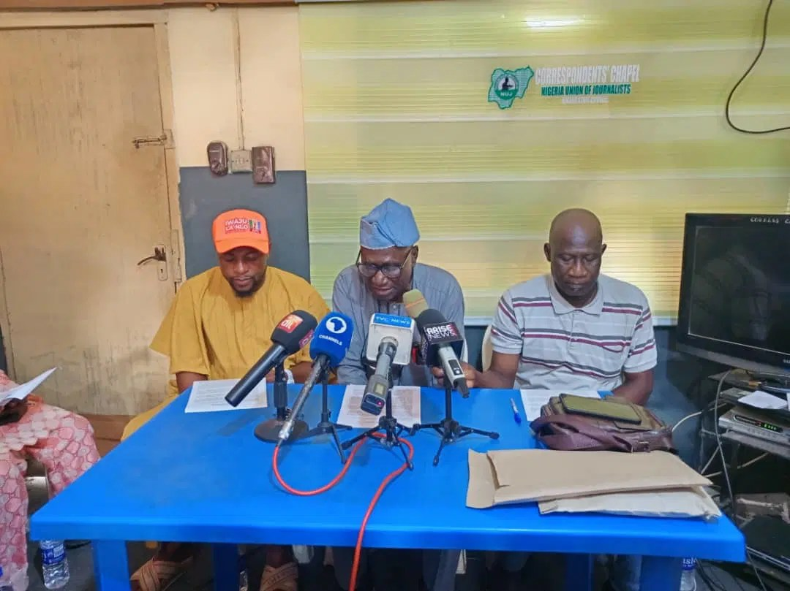

2027: Aaro Meta urges Kwara South APC to back Danladi

Political group Aaro Meta has urged aggrieved All Progressives Congress members in Kwara South to reconcile and support the party’s governorship candidate, Kwara State House of Assembly Speaker Yakubu Salihu Danladi, ahead of the 2027 general elections. The group also endorsed a candidate from Kwara North, saying political power should be shared fairly among the state’s three senatorial districts.
Coordinator Adebayo S. Daramola made the appeal on Friday at a News Keg event organised by the Nigeria Union of Journalists’ Correspondents’ Chapel in Ilorin. He said Aaro Meta had supported the 2018 O to Ge movement, which contributed to the APC-led government taking office in 2019, and argued that sustaining the party’s electoral prospects required unity and fairness.
The group recalled that it backed an APC candidate from Kwara Central in the 2019 governorship election despite being based in Kwara South. That candidate, AbdulRahman AbdulRazaq, won the election and secured a second term in 2023. Aaro Meta said Kwara South should show similar political accommodation by supporting Danladi, rather than allowing divisions over preferred aspirants to weaken the party.
Aaro Meta said Kwara South had produced a governor for eight years since 1999, while Kwara Central would have accounted for 20 years in office by the end of AbdulRazaq’s tenure in May 2027. It appealed particularly to dissatisfied APC members and the G-15 political bloc to work for Danladi and other party candidates, warning that internal disputes could give opposition parties an advantage.
The group also praised President Bola Tinubu and Governor AbdulRazaq for efforts to address banditry and kidnapping, saying insecurity in Kwara South had declined. It identified the Oro Forest corridor, from Oro-Ago and Oreke Road towards Egbe, Okoloke and Lade, as a continuing concern. It described military bases in Oro-Ago and Babanla, and the 184 Battalion in Omu-Aran, as strategic to tackling the threat.
Source: Vanguard